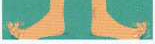

Các bộ phận của cơ thể
Đầu và mặt
Các thành ngữ khác về cơ thể
Tôi sẵn sàng give my right arm để có một công việc trong ngành công nghiệp điện ảnh. Tôi luôn yêu thích phim ảnh. [rất muốn có được điều gì đó]
Tôi không muốn tread on your toes, nhưng liệu có ổn không nếu tôi thêm một vài đoạn vào báo cáo của bạn? [làm điều gì đó có thể gây phật lòng/khó chịu cho người khác bằng cách can thiệp vào việc thuộc trách nhiệm của họ]
Truyền thông có xu hướng point the finger vào chính phủ về hầu hết các vấn đề hiện tại. [buộc tội/chỉ trích ai đó phải chịu trách nhiệm cho việc gì]
Anh ấy đã có một bài phát biểu tồi tệ. Anh ấy kể rất nhiều chuyện đùa nhưng không ai cười cả. Việc đó made my toes curl. [khiến bạn cảm thấy vô cùng xấu hổ hoặc ngượng ngùng thay cho người khác]
Bạn phải đọc báo hàng ngày nếu muốn keep your finger on the pulse. [luôn cập nhật thông tin mới nhất]
Vẽ tranh để giúp bạn nhớ các thành ngữ,
ví dụ: vẽ các ngón chân và viết thành ngữ 'toes curl' vào đó.
